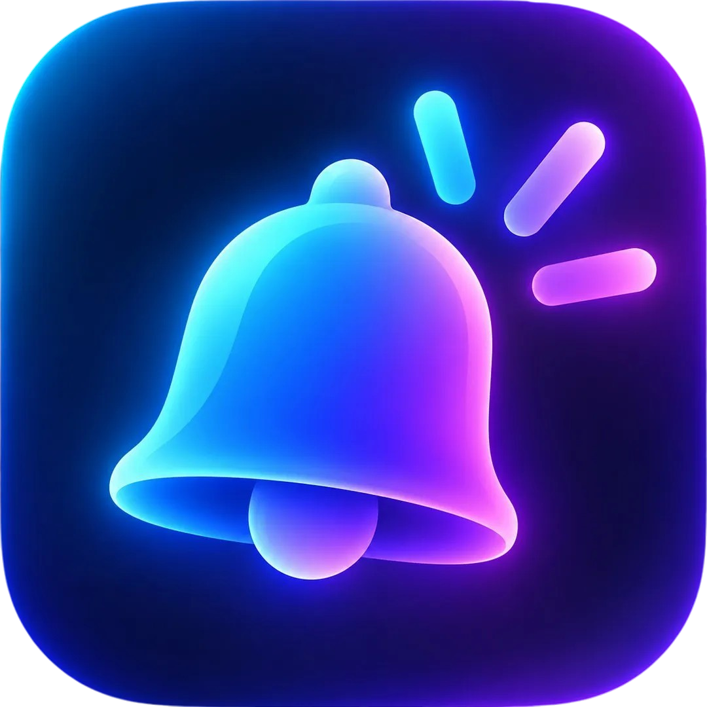

NotiGlowNotiGlow reads limited local system signals solely to render customizable screen-edge glow animations on your display:
UserNotificationListener API, NotiGlow inspects incoming toast notification metadata — specifically the sender application identifier (AppUserModelId / display name) — strictly in volatile RAM to match your configured profile and trigger the corresponding glow effect. Notification message bodies and personal message contents are never written to disk, never stored in a database, and never transmitted over any network.
All settings, profiles, cached icons, and optional troubleshooting logs are stored strictly on your local computer:
%AppData%\NotiGlow\settings.json — Stores your preferences (animation defaults, theme mode, accent color, window backdrop material, multi-monitor mode, Gaming Mode rules, tracked games list, per-game overrides, language, and window geometry).%AppData%\NotiGlow\profiles.json — Stores your per-application notification glow profiles, colors, categories, and enable/disable states.%LocalAppData%\NotiGlow\icon_cache\ — Stores locally extracted PNG icons for your tracked applications and games to speed up UI rendering.%AppData%\NotiGlow\logs\ — Stores local operational and diagnostic log files (such as error diagnostics when debug logging is enabled). Logs stay on your device and are never uploaded automatically.%AppData%\NotiGlow\updates\ — Used only by the standalone GitHub edition to temporarily store downloaded release installers and SHA-256 verification files when you initiate an update.HKCU\Software\Microsoft\Windows\CurrentVersion\Run — Written only if you explicitly enable Start with Windows, and removed if you disable it.Note: When installed as an MSIX / Microsoft Store package, Windows may virtualize AppData paths inside the app's local package container.
Software\Valve\Steam) and parses local Steam library metadata files (libraryfolders.vdf and appmanifest_*.acf) in read-only mode.
%ProgramData%\Epic\EpicGamesLauncher\Data\Manifests in read-only mode.
OpenFileDialog) and accesses only the specific executable path you explicitly choose to record its identifier and extract its icon locally.
NotiGlow's network behavior depends on how the application is installed:
https://api.github.com/repos/owergungor/Notiglow/releases/latest) using a generic header (NotiGlow-Updater/4.0 (Windows; x64)). No personal information, device identifiers, or usage statistics are included. If you confirm an update, the release package and its SHA256.txt checksum are downloaded directly from GitHub Releases. You can disable automatic update checks at any time in Advanced Settings.
.NET 9.0, Microsoft.WindowsAppSDK, and Microsoft.Windows.SDK.BuildTools). No third-party data-processing SDKs are bundled.NotiGlow requests only the permissions strictly necessary for its functionality:
UserNotificationListener): Required to detect incoming toast notifications and trigger edge glow animations.runFullTrust in MSIX): Required by Windows desktop WinUI 3 apps to render transparent borderless overlays across monitors, manage the system tray icon, read local Steam/Epic manifests, and detect running game processes.Because all configuration data remains on your local device, its security is protected by your Windows user account permissions. NotiGlow retains your local settings and profiles only for as long as you keep them on your machine.
Standalone update downloads are verified against published SHA-256 checksums when available before launching the installer.
You maintain complete ownership and control over all local data created by NotiGlow:
%AppData%\NotiGlow\.%AppData%\NotiGlow and %LocalAppData%\NotiGlow to permanently remove all local files, cached icons, and logs.If NotiGlow's data handling changes in a future version, this Privacy Policy will be updated accordingly with a new Last Updated date.
For privacy questions, security reports, or feedback, please use the official project repository: